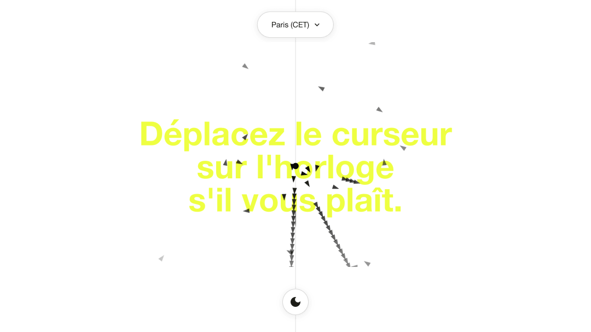
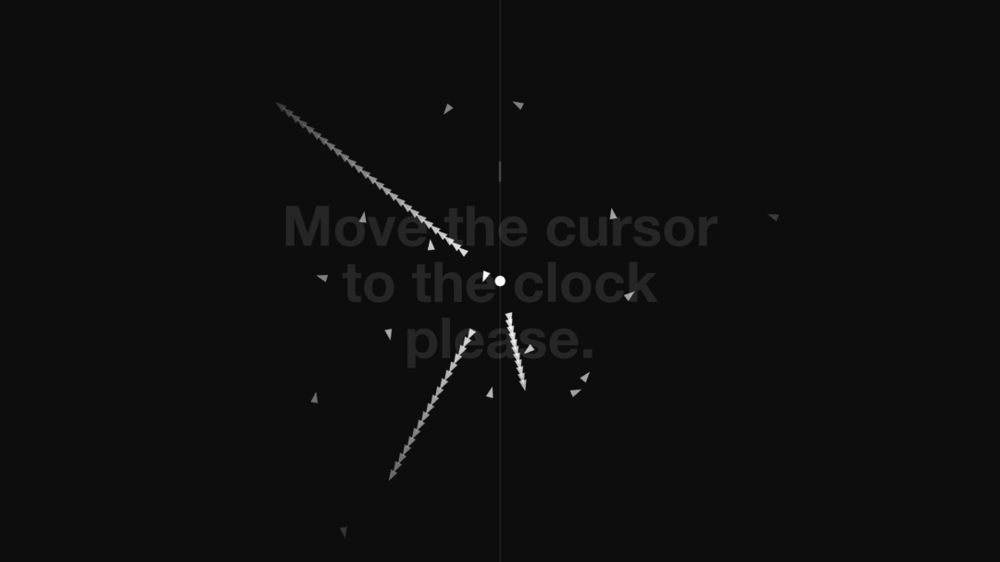
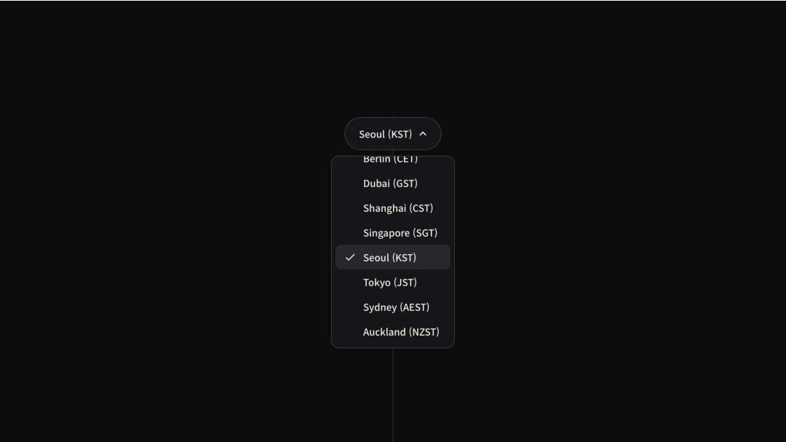

Interactive Analog Clock
+ 실시간 타임존 시계로 삼각형 시침·분침·초침이 동작해요.
+ 마우스·터치에 반응해 시침이 퍼지고 회전하는 인터랙티브 그래픽이에요.

시계 작동 원리 — JavaScript Intl.DateTimeFormat으로 선택한 타임존의 실시간 시·분·초를 계산하고, 각도를 초당 6°(초침)·0.1°(분침)·0.5°(시침) 비율로 변환해요. Canvas 2D API로 시침 16개, 분침 24개, 초침 32개의 삼각형을 시간각에 맞춰 배치하며, lerp(선형 보간)으로 바늘 움직임을 부드럽게 해요. 중앙에서 멀어질수록 opacity를 낮추어 깊이감을 줘요.

인터랙션 원리 — 마우스·터치 위치를 캔버스 중심 기준 -1~1로 정규화해 커서 근접도를 구해요. 근접 시 삼각형마다 시드 기반으로 고유한 산산 방향·거리(scatter)와 회전(spin)을 부여해, 시침이 퍼지며 제각기 회전하는 효과를 만들어요. scatterProgress로 바늘 안쪽부터 순차적으로 반응하게 하여 자연스러운 전파 애니메이션을 구현했어요. 시계 전체에 perspective 3D tilt를 적용해 커서 방향으로 기울어지고, 모바일에서는 자이로스코프(DeviceOrientationEvent)를 지원해요.

배경·UI — 별도 Canvas에서 세로선들이 위에서 아래로 일정 속도로 낙하하는 falling lines 배경을 그려요. 16개 도시 타임존 선택과 다크모드는 localStorage에 저장하고, 다크모드 전환 시 시침·배경 색상이 반전돼요.